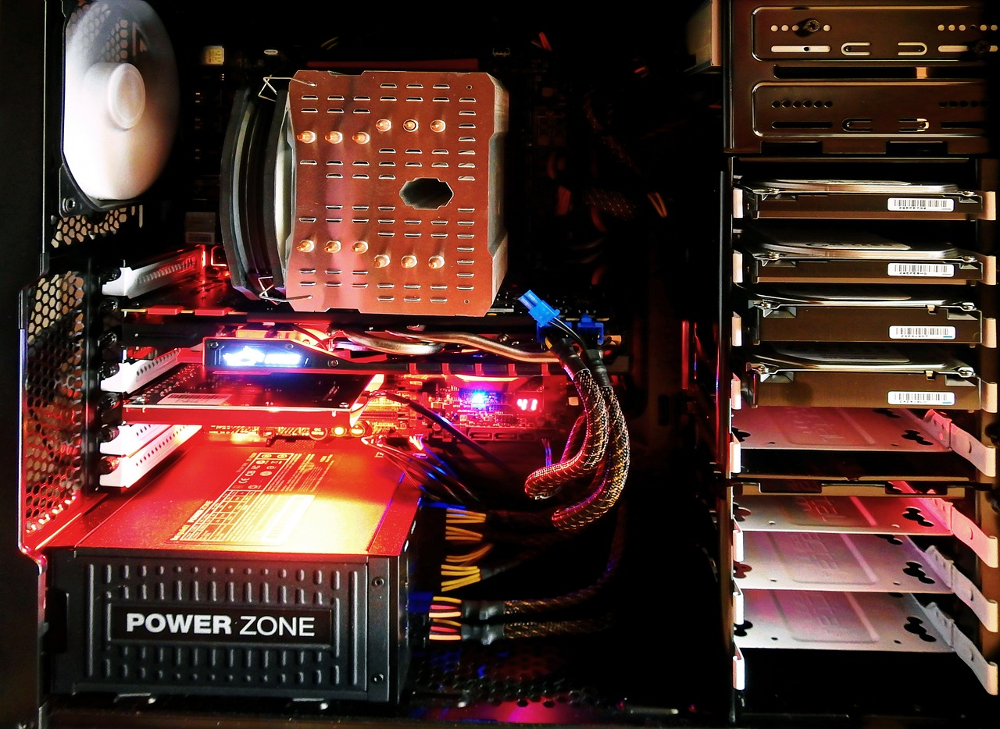

Informácie o počítačoch
Na tejto stránke si môžete obohatiť vašu znalosť o počítačoch
,najmä technicky menej skúsení ľudia
Sú tu informácie ohľadom častí a zariadení ktoré počítač má
Čo je počítač?
Počítač je zariadenie alebo stroj na realizáciu výpočtov alebo riadenie operácií vyjadriteľných číselnými alebo logickými výrazmi. Počítače sa skladajú z komponentov, ktoré vykonávajú čiastkové, dobre definované funkcie. Komplexné vzťahy medzi týmito komponentmi dávajú počítačom schopnosti spracovávať informácie.
Aké časti poznáme?
- Softwarová časť:
- Je všetko programové vybavenie počítača. Bez programov by nám bol počítač platný len ako okrasa v domácnosti
- Hardverová časť:
- Je všetka technika v počítači aj mimo neho (s ním súvisiaca). To je všetko, čo sa týka počítača a čo môžem chytiť do ruky.
Z čoho sa skladá počítač?
- Počítač je zložený zo sústavy komponentov ktoré su:
- -Skrinka a zdroj = skrinka slúži ako uložisko komponentov a zároveň chráni komponenty pred vodou.
- -MB-main board = Matičná doska
- -CPU-Central Processor Unit = Centrálna procesorová jednotka
- -HD - Hard Disk = Pevný disk
- -SSD - Solid State Drive = Mechanika s nepohyblivým médiom(častejšie používaná kvôli lepším vlastnosťiam ako HD)
- -RAM - Random Access Memory = Ľubovoľne prístupná pamäť
- -CACHE - Rýchla vyrovnávacia pamäť
- K počítaču sa dajú pripojiť aj Externé zariadenia, ktoré sú nutnou súčasťou aby sme mohli pracovať s počítačom.
- Takéto zariadenia sú napríklad:
- -Monitor
- -Klávesnica
- -Myška
- Máme aj zariadenia ktoré rozširujú zostavu počítača ako napríklad:
- -Slúchadká
- -Reproduktory
- -Mikrofón
- -Tlačiareň
- A mnoho dalších
Načo si dať pozor pri kúpe komponentov?
klikni tu a zisťi viac ❯
InfoPár typov socketov pre CPU
Viac typov nájdete v tomto linku| Procesor | Socket |
|---|---|
| AMD- | Socket A |
| AMD- | Socket 754 |
| AMD- | Socket AM2 |
| AMD- | Socket AM4 |
| AMD- | Socket TR4 |
| Intel- | Socket 478 |
| Intel- | Socket LGA 755 |
| Intel- | Socket LGA 1155 |
| Intel- | Socket LGA 2011 |
| Intel- | Socket LGA 2066 |
| Intel- | Socket LGA 1700 |